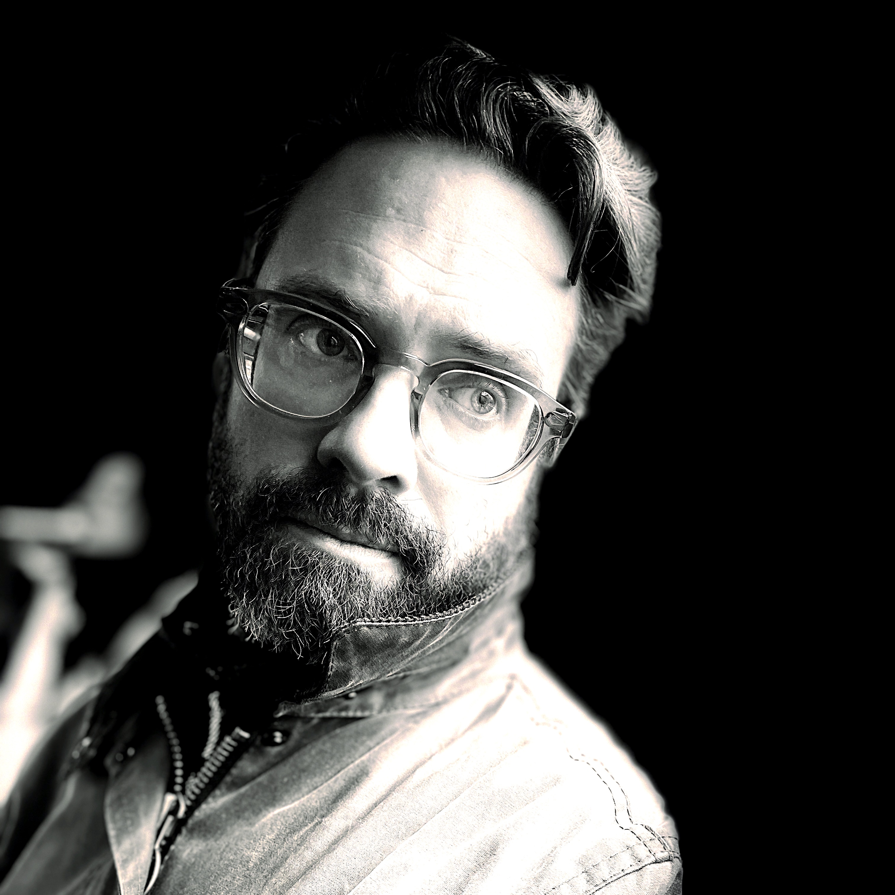

{% include language-toggle.html %}

Biography
Violist · Teacher · Writer
David Glidden is a Canadian-American-French violist whose work spans music from the Renaissance to the 20th century, with a particular focus on historically informed performance. Based in Barcelona, he serves as principal viola with Le Concert des Nations under Jordi Savall and Les Musiciens du Louvre under Marc Minkowski. Known for his distinctive sound, intellectual rigor, and deep ensemble sensibility, he brings structural clarity and expressive nuance to repertoire from Monteverdi to Webern.
Glidden has performed at major concert halls and festivals across Europe, Asia, and North America. His interpretations have been recognized with the ORF Ö1-Pasticcio-Preis and the Förderpreis für Kultur Stadt Salzburg, and featured on acclaimed recordings for DECCA, CPO, Alia Vox, Archiv Produktions, and in numerous collaborations with leading early music artists.
He was a founding member and principal violist of both Le Cercle de l’Harmonie and L’Harmonie Universelle, and has held principal roles with ensembles including Opera Fuoco, Capella Augustina, and La Ritirata. His chamber music collaborations include work with Café Zimmermann, the Penderecki String Quartet, and international artists such as Francesco Corti, Hiro Kurosaki, Balázs Máté, and Jos van Immerseel.
Pedagogy and Lineage
In parallel with his performance career, Glidden is the creator of Pattern, Presence, Practice — a developmental pedagogical framework that reimagines violin and viola instruction as a living, adaptive system. It synthesizes the architectural insight of Christopher Alexander’s A Pattern Language with multidimensional approaches to string pedagogy, integrating historical performance techniques, somatic awareness, and the cultivation of artistic autonomy. Rooted in both the Galamian tradition and historically informed performance, the method emphasizes clarity, coherence, and personal voice. Drawing from a wide range of sources — including Geminiani, Tartini, Leopold Mozart, Galamian, Alexander, Dounis, Helmut Zehetmair, and contemporary cognitive science — Pattern, Presence, Practice offers students not only technical mastery but a reflective, embodied, and sustainable path toward artistic expression.
Glidden’s pedagogical lineage spans both modern and historical traditions, grounded in an eclectic and rigorous training shaped by master teachers across generations.
His early formation was guided by Karen Kimett and Angelo Calcafuoco, and deepened through studies with Eugene Kash, whose lineage includes Otakar Ševčík, Bronislaw Huberman, Kathleen Parlow, and Dimitri Dounis. Kash introduced Glidden to the disciplined technical system of Ivan Galamian, grounding his approach in precision and clarity. Parallel to this, he absorbed the legacy of Steven Staryk, his godfather and a formative influence in tone production and articulation—whose lineage traces back to Leopold Auer via Alexander Chuhaldin. Later studies with Martin Beaver refined his structural and interpretive sensibility within the Flesch–Galamian tradition, while David Stewart introduced him to early music and ensemble leadership, drawing from the Ysaÿe–Auer line and the Canadian chamber music ethos.
His path toward historically informed performance deepened through chamber music work with the Penderecki String Quartet, notably Jerzy Kaplanek and Jeremy Bell, and through masterclasses with Jaap Schröder that encouraged a more rhetorical approach to early repertoire. This led to further study at the Royal Conservatory of The Hague with Pavlo Beznosiuk, a leading figure in historically informed string playing. This lineage—from Ševčík and Dounis through Beznosiuk and Schröder—shapes Glidden’s pedagogical voice and informs Pattern, Presence, Practice as a living system of clarity, embodiment, and musical insight.
Selected Highlights
Current Principal Positions
- Principal Viola
Le Concert des Nations (Jordi Savall)
Les Musiciens du Louvre (Marc Minkowski)
Founding Roles
- Founding Member & Principal Viola
Le Cercle de l’Harmonie
L’Harmonie Universelle
Recognition
- Awards
ORF Ö1-Pasticcio-Preis (2016)
Förderpreis für Kultur Stadt Salzburg (2016)
Recording Projects
- DECCA – Mozart Piano Quartets (part of Mozart225)
- CPO – Complete Michael Haydn String Quintets
- Numerous recordings with Savall, Minkowski, and others
- Documentary Feature – Saudade: Rendezvous in Brazil (on Sigismund Neukomm)
Teaching & Pedagogy
- Creator, Pattern, Presence, Practice
- Viola Coach, JONC Early Music Program
- Professor, Curs III de Música Antiga de Girona
- Committee Member, YOPCA Auditions
Languages
English (native) · French (C2) · Spanish (B2)
Working knowledge of German and Italian
Currently studying Catalan
His reflections on music, attention, and pedagogy appear in his writing under the title Animal Rationis Capax, where he explores the ethical dimensions of a life devoted to sound and transmission.
Biographie
Altiste · Professeur · Écrivain
David Glidden est un altiste canadien-américain-français dont le travail s’étend de la musique de la Renaissance au XXe siècle, avec un accent particulier sur l’interprétation historiquement informée. Basé à Barcelone, il occupe le poste d’alto solo au Concert des Nations sous la direction de Jordi Savall et aux Musiciens du Louvre sous Marc Minkowski. Reconnu pour son son distinctif, sa rigueur intellectuelle et sa profonde sensibilité d’ensemble, il apporte clarté structurelle et nuances expressives au répertoire de Monteverdi à Webern.
Glidden s’est produit dans les principales salles de concert et festivals d’Europe, d’Asie et d’Amérique du Nord. Ses interprétations ont été distinguées par l’ORF Ö1-Pasticcio-Preis et le Förderpreis für Kultur Stadt Salzburg, et mises en valeur dans des enregistrements acclamés pour DECCA, CPO, Alia Vox, Archiv Produktions, ainsi que dans de nombreuses collaborations avec des artistes de premier plan de la musique ancienne.
Il fut membre fondateur et alto solo du Cercle de l’Harmonie et de L’Harmonie Universelle, et a occupé des rôles principaux dans des ensembles tels qu’Opera Fuoco, Capella Augustina et La Ritirata. Ses collaborations de musique de chambre incluent des travaux avec Café Zimmermann, le Quatuor à cordes Penderecki, et des artistes internationaux tels que Francesco Corti, Hiro Kurosaki, Balázs Máté et Jos van Immerseel.
Pédagogie et Lignée
Parallèlement à sa carrière d’interprète, Glidden est le créateur de Pattern, Presence, Practice — un cadre pédagogique développemental qui repense l’enseignement du violon et de l’alto comme un système vivant et adaptatif. Il synthétise la perspective architecturale du « Pattern Language » de Christopher Alexander avec des approches multidimensionnelles de la pédagogie des cordes, intégrant les techniques d’interprétation historiquement informée, la conscience somatique et la cultivation de l’autonomie artistique. Enracinée à la fois dans la tradition Galamian et l’interprétation historiquement informée, la méthode met l’accent sur la clarté, la cohérence et la voix personnelle. Puisant dans un large éventail de sources — incluant Geminiani, Tartini, Leopold Mozart, Galamian, Alexander, Dounis, Helmut Zehetmair et les sciences cognitives contemporaines — Pattern, Presence, Practice offre aux étudiants non seulement la maîtrise technique mais un chemin réflexif, incarné et durable vers l’expression artistique.
La lignée pédagogique de Glidden s’étend sur les traditions modernes et historiques, ancrée dans une formation éclectique et rigoureuse façonnée par des maîtres de plusieurs générations.
Sa formation précoce fut guidée par Karen Kimett et Angelo Calcafuoco, et approfondie par des études avec Eugene Kash, dont la lignée inclut Otakar Ševčík, Bronislaw Huberman, Kathleen Parlow et Dimitri Dounis. Kash initia Glidden au système technique discipliné d’Ivan Galamian, fondant son approche sur la précision et la clarté. Parallèlement, il absorba l’héritage de Steven Staryk, son parrain et une influence formatrice dans la production sonore et l’articulation — dont la lignée remonte à Leopold Auer via Alexander Chuhaldin. Des études ultérieures avec Martin Beaver affinèrent sa sensibilité structurelle et interprétative dans la tradition Flesch–Galamian, tandis que David Stewart l’introduisit à la musique ancienne et au leadership d’ensemble, puisant dans la lignée Ysaÿe–Auer et l’éthos canadien de la musique de chambre.
Son parcours vers l’interprétation historiquement informée s’approfondit par le travail de musique de chambre avec le Quatuor à cordes Penderecki, notamment Jerzy Kaplanek et Jeremy Bell, et par des masterclasses avec Jaap Schröder qui encouragèrent une approche plus rhétorique du répertoire ancien. Cela mena à des études supplémentaires au Conservatoire royal de La Haye avec Pavlo Beznosiuk, figure de proue de l’interprétation historiquement informée des cordes. Cette lignée — de Ševčík et Dounis à Beznosiuk et Schröder — façonne la voix pédagogique de Glidden et informe Pattern, Presence, Practice comme un système vivant de clarté, d’incarnation et de perspicacité musicale.
Points Saillants Sélectionnés
Postes Principaux Actuels
Alto Solo - Le Concert des Nations (Jordi Savall) - Les Musiciens du Louvre (Marc Minkowski)
Rôles Fondateurs
Membre Fondateur et Alto Solo - Le Cercle de l’Harmonie - L’Harmonie Universelle
Reconnaissance
Prix - ORF Ö1-Pasticcio-Preis (2016) - Förderpreis für Kultur Stadt Salzburg (2016)
Projets d’Enregistrement
- DECCA – Quatuors pour Piano de Mozart (partie de Mozart225)
- CPO – Quintettes à cordes complets de Michael Haydn
- Nombreux enregistrements avec Savall, Minkowski et d’autres
- Documentaire – Saudade: Rendezvous in Brazil (sur Sigismund Neukomm)
Enseignement et Pédagogie
- Créateur, Pattern, Presence, Practice
- Coach d’Alto, Programme de Musique Ancienne JONC
- Professeur, Curs III de Música Antiga de Girona
- Membre du Comité, Auditions YOPCA
Langues
Anglais (natif) · Français (C2) · Espagnol (B2) Connaissance pratique de l’allemand et de l’italien Étudie actuellement le catalan
Ses réflexions sur la musique, l’attention et la pédagogie paraissent dans ses écrits sous le titre Animal Rationis Capax, où il explore les dimensions éthiques d’une vie consacrée au son et à la transmission.
Biografía
Violista · Profesor · Escritor
David Glidden es un violista canadiense-estadounidense-francés cuyo trabajo abarca música desde el Renacimiento hasta el siglo XX, con un enfoque particular en la interpretación históricamente informada. Radicado en Barcelona, se desempeña como viola principal con Le Concert des Nations bajo la dirección de Jordi Savall y Les Musiciens du Louvre bajo Marc Minkowski. Reconocido por su sonido distintivo, rigor intelectual y profunda sensibilidad de conjunto, aporta claridad estructural y matices expresivos al repertorio desde Monteverdi hasta Webern.
Glidden ha actuado en las principales salas de conciertos y festivales de Europa, Asia y América del Norte. Sus interpretaciones han sido reconocidas con el ORF Ö1-Pasticcio-Preis y el Förderpreis für Kultur Stadt Salzburg, y destacadas en grabaciones aclamadas para DECCA, CPO, Alia Vox, Archiv Produktions, y en numerosas colaboraciones con destacados artistas de música antigua.
Fue miembro fundador y viola principal tanto de Le Cercle de l’Harmonie como de L’Harmonie Universelle, y ha ocupado roles principales en conjuntos como Opera Fuoco, Capella Augustina y La Ritirata. Sus colaboraciones de música de cámara incluyen trabajo con Café Zimmermann, el Cuarteto de Cuerdas Penderecki, y artistas internacionales como Francesco Corti, Hiro Kurosaki, Balázs Máté y Jos van Immerseel.
Pedagogía y Linaje
Paralelamente a su carrera interpretativa, Glidden es el creador de Pattern, Presence, Practice — un marco pedagógico de desarrollo que reimagina la enseñanza del violín y la viola como un sistema vivo y adaptativo. Sintetiza la perspectiva arquitectónica de “A Pattern Language” de Christopher Alexander con enfoques multidimensionales hacia la pedagogía de cuerdas, integrando técnicas de interpretación históricamente informada, conciencia somática y el cultivo de la autonomía artística. Arraigado tanto en la tradición Galamian como en la interpretación históricamente informada, el método enfatiza la claridad, coherencia y voz personal. Nutriéndose de una amplia gama de fuentes — incluyendo Geminiani, Tartini, Leopold Mozart, Galamian, Alexander, Dounis, Helmut Zehetmair y la ciencia cognitiva contemporánea — Pattern, Presence, Practice ofrece a los estudiantes no solo dominio técnico sino un camino reflexivo, encarnado y sostenible hacia la expresión artística.
El linaje pedagógico de Glidden abarca tanto tradiciones modernas como históricas, fundamentado en una formación ecléctica y rigurosa moldeada por maestros de varias generaciones.
Su formación temprana fue guiada por Karen Kimett y Angelo Calcafuoco, y profundizada a través de estudios con Eugene Kash, cuyo linaje incluye a Otakar Ševčík, Bronislaw Huberman, Kathleen Parlow y Dimitri Dounis. Kash introdujo a Glidden al sistema técnico disciplinado de Ivan Galamian, fundamentando su enfoque en precisión y claridad. Paralelamente, absorbió el legado de Steven Staryk, su padrino y una influencia formativa en la producción de sonido y articulación—cuyo linaje se remonta a Leopold Auer a través de Alexander Chuhaldin. Estudios posteriores con Martin Beaver refinaron su sensibilidad estructural e interpretativa dentro de la tradición Flesch–Galamian, mientras que David Stewart lo introdujo a la música antigua y el liderazgo de conjunto, nutriéndose de la línea Ysaÿe–Auer y el ethos canadiense de música de cámara.
Su camino hacia la interpretación históricamente informada se profundizó a través del trabajo de música de cámara con el Cuarteto de Cuerdas Penderecki, notablemente Jerzy Kaplanek y Jeremy Bell, y mediante clases magistrales con Jaap Schröder que alentaron un enfoque más retórico del repertorio temprano. Esto condujo a estudios adicionales en el Real Conservatorio de La Haya con Pavlo Beznosiuk, una figura destacada en la interpretación históricamente informada de cuerdas. Este linaje—desde Ševčík y Dounis hasta Beznosiuk y Schröder—moldea la voz pedagógica de Glidden e informa Pattern, Presence, Practice como un sistema vivo de claridad, encarnación y perspicacia musical.
Puntos Destacados Seleccionados
Posiciones Principales Actuales
Viola Principal - Le Concert des Nations (Jordi Savall) - Les Musiciens du Louvre (Marc Minkowski)
Roles Fundadores
Miembro Fundador y Viola Principal - Le Cercle de l’Harmonie - L’Harmonie Universelle
Reconocimientos
Premios - ORF Ö1-Pasticcio-Preis (2016) - Förderpreis für Kultur Stadt Salzburg (2016)
Proyectos Discográficos
- DECCA – Cuartetos para Piano de Mozart (parte de Mozart225)
- CPO – Quintetos de Cuerdas Completos de Michael Haydn
- Numerosas grabaciones con Savall, Minkowski y otros
- Documental – Saudade: Rendezvous in Brazil (sobre Sigismund Neukomm)
Enseñanza y Pedagogía
- Creador, Pattern, Presence, Practice
- Entrenador de Viola, Programa de Música Antigua JONC
- Profesor, Curs III de Música Antiga de Girona
- Miembro del Comité, Audiciones YOPCA
Idiomas
Inglés (nativo) · Francés (C2) · Español (B2) Conocimiento funcional de alemán e italiano Actualmente estudiando catalán
Sus reflexiones sobre música, atención y pedagogía aparecen en sus escritos bajo el título Animal Rationis Capax, donde explora las dimensiones éticas de una vida dedicada al sonido y la transmisión.